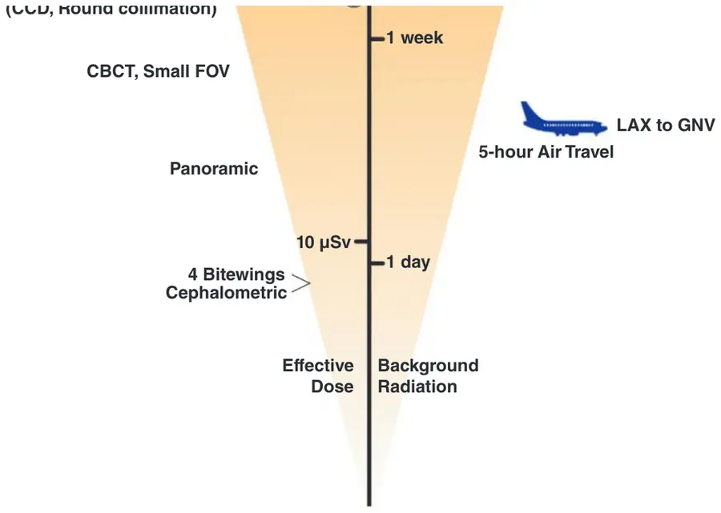
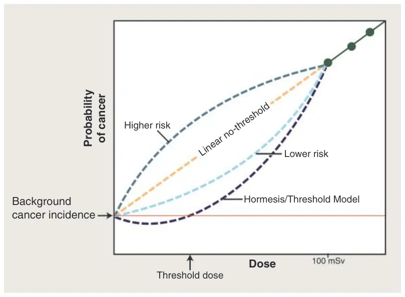

نسخه استخراجشده؛ ترجمه یا تأیید علمی انجام نشده است. وضعیت: captured
نخست یک عدد که مقیاس کار را نشان میدهد: «هر سال بیش از یک میلیارد معاینهی رادیوگرافی دندانی در جهان انجام میشود، که تقریباً ۲۶ درصد همهی روشهای تصویربرداری رادیوگرافی بهداشتی را میسازد.»

ولی سهمش از دوز چقدر است؟ «با وجود فراوانی بالای کاربردشان، معاینات پرتو ایکس دندانی کمتر از ۲ درصد کل پرتوگیری از تصویربرداری پزشکی را میسازند.» — یکچهارم معاینات، کمتر از یکپنجاهم دوز.
و دوز به بیمار بهصورت دوز مؤثر گزارش میشود، که «سنجهای از خطرات تصادفی» است. این جدول را بشناس — ستون آخرش کاربردیترین بخش آن است:
| معاینه | میانهی دوز مؤثر | معادل پرتو زمینه |
|---|---|---|
| داخلدهانی — با کولیماسیون مستطیلی | ||
| بایتوینگ خلفی (PSP یا فیلم F) | ۵ میکروسیورت | ۰٫۶ روز |
| فولماوت (PSP یا فیلم F) | ۴۰ میکروسیورت | ۵ روز |
| فولماوت (سنسور CCD، برآوردی) | ۲۰ میکروسیورت | ۲٫۵ روز |
| داخلدهانی — با کولیماسیون گرد | ||
| فولماوت (فیلم D) | ۴۰۰ میکروسیورت | ۴۸ روز |
| فولماوت (PSP یا فیلم F) | ۲۰۰ میکروسیورت | ۲۴ روز |
| فولماوت (سنسور CCD، برآوردی) | ۱۰۰ میکروسیورت | ۱۲ روز |
| خارجدهانی | ||
| پانورامیک | ۲۰ میکروسیورت | ۲٫۵ روز |
| سفالومتریک | ۵ میکروسیورت | ۰٫۶ روز |
| رادیوگرافی قفسهی سینه | ۱۰۰ میکروسیورت | ۱۲ روز |
| CBCT | ||
| میدان دید محدود (کمتر از ۶ سانتیمتر) | ۵۰ میکروسیورت | ۶ روز |
| میدان ماگزیلوفاسیال (یک یا هر دو فک) | ۱۰۰ میکروسیورت | ۱۲ روز |
| میدان کرانیوفاسیال (هر دو فک با جمجمه) | ۱۲۰ میکروسیورت | ۱۵ روز |
| MDCT | ||
| ماگزیلوفاسیال | ۶۵۰ میکروسیورت | ۲ ماه |
| سر | ۲ میلیسیورت | ۸ ماه |
| قفسهی سینه | ۷ میلیسیورت | ۲ سال |
| شکم و لگن، با و بدون کنتراست | ۲۰ میلیسیورت | ۷ سال |
و مبنای ستون آخر: «معادل پرتوگیری زمینه بر پایهی دوز پرتو زمینهی ۳٫۱ میلیسیورت در سال محاسبه شده است.»
و سه مقایسهی تکاندهنده از همین جدول:
و محدودیت مهم دوز مؤثر که باید بدانی: «دوز مؤثر سن، جنس و عوامل حساسیت فردی را در نظر نمیگیرد و بنابراین قرار نیست دوز پرتویی یک فرد از آن روش را نمایندگی کند. با این حال، سنجهی مناسبی برای مقایسهی خطرات نسبی معاینات مختلف و انتقال بزرگی نسبی خطر به بیماران است.»
و یک خبر خوب: «برآوردهای اخیر میانگین دوز مؤثر جمعیت آمریکا از پرتو تشخیصی به ۲٫۲ میلیسیورت کاهش یافته، در برابر برآورد پیشین ۳٫۱ میلیسیورت در ۲۰۰۶.» و چرا؟ «این کاهش دوز بازتاب نوآوریهای فناورانه و شیوههای بهتر انتخاب بیمار و دوزهای بهینهشده است. و اصلی را تقویت میکند که شیوههای ساده بهطور اساسی به کاهش دوز بیمار کمک میکنند.»
اصل بنیادی تصویربرداری تشخیصی: «سود برای بیمار بهمراتب بر خطرات مرتبط با پرتو میچربد.» و برای برآورده کردن این اصل، دوز معاینهی رادیوگرافی دندانوفکوصورت باید سه شرط داشته باشد:

و کالج رادیولوژی آمریکا یک ردهبندی از سطوح نسبی پرتو ساخته است — با دو ستون مجزا برای بزرگسال و کودک:
| سطح | دامنهی دوز مؤثر بزرگسال | دامنهی دوز مؤثر کودک |
|---|---|---|
| ۱ (کمترین) | کمتر از ۱۰۰ میکروسیورت | کمتر از ۳۰ میکروسیورت |
| ۲ | ۱۰۰ میکروسیورت تا ۱ میلیسیورت | ۳۰ تا ۳۰۰ میکروسیورت |
| ۳ | ۱ تا ۱۰ میلیسیورت | ۳۰۰ میکروسیورت تا ۳ میلیسیورت |
| ۴ | ۱۰ تا ۳۰ میلیسیورت | ۳ تا ۱۰ میلیسیورت |
| ۵ (بیشترین) | ۳۰ تا ۱۰۰ میلیسیورت | ۱۰ تا ۳۰ میلیسیورت |
و منطق دو ستونی بودنش را ببین: دامنهی کودک در هر سطح حدود سه برابر پایینتر است، چون «خطرات سرطان مرتبط با پرتوگیری کودکان بالاتر از بزرگسالان است».
موقعیت را واقعبینانه ببین: «با همهی بحثهای خطر پرتو در رسانههای عمومی و دسترسی به اطلاعات از راه اینترنت، کاملاً منطقی است که فردی نگران باشد. مهم است که با بیمارانتان روشن و مطمئن صحبت کنید، حتی اگر نگرانیهایشان نابهجا یا غیرمنطقی به نظر برسند.»
و پنج گام گفتوگو:
و جملهی پایانیاش: «توجه کن که رادیوگرافی دندانوفکوصورت، در برابر دیگر روشهای تصویربرداری پزشکی، دوزهای ناچیز تا کمینه میدهد.» و هدف گفتوگو: «پرداختن به نگرانیهای بیمار و افزایش اعتمادش به مراقبت مبتنی بر شواهد».
و یک عدد مفید برای همین گفتوگو: «بهطور معمول یک پرواز هوایی پنجساعته در ارتفاع کروز ۱۲ کیلومتر به پرتوگیری تقریباً ۲۰ تا ۵۰ میکروسیورت میانجامد» — یعنی هممرتبه با یک فولماوت بهینه.